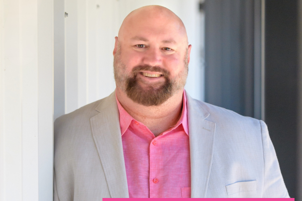
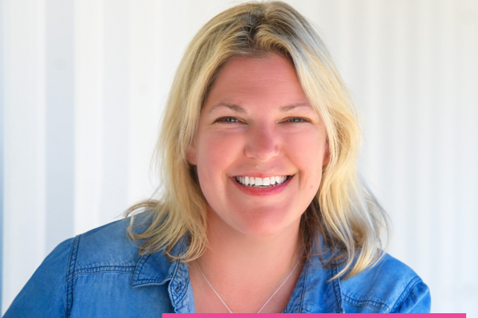
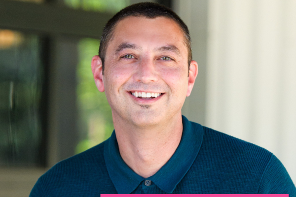
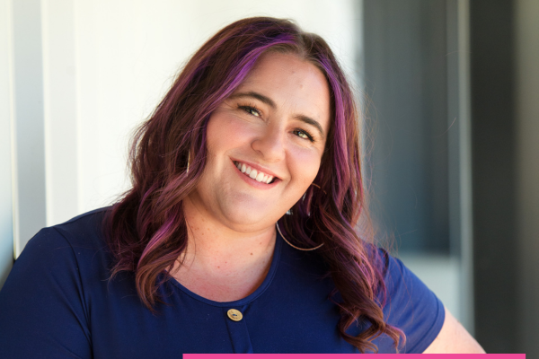

A proposal for the redesign and rebuild of CTW's website.
Submitted by MKTNG
May 1, 2026
EXECUTIVE SUMMARY
CTW has the right firm. The website should reflect it.
The current site reflects a generalist compliance shop with sixty service pages and twenty-eight industries. The firm has moved past that. Advisory-led work with middle-market owners and CFOs through capital events is now the core. The website should be the next thing to catch up.
We propose to close the gap in four weeks for the core build, twelve weeks for the full launch with original photography. Three engagement modes let CTW choose how deep the partnership goes.
PATH FORWARD FOUNDATION
The website rebuild itself, ready in four weeks. Astro on Cloudflare with Keystatic, sub-one-second load times, AEO foundation built in, lead generation system operational at launch.
PATH FORWARD ENGINE
Foundation plus the content production system. Podcast launch, quarterly original research, monthly press releases, partner LinkedIn programs, AI Concierge.
PATH FORWARD PARTNERSHIP
Engine plus full ongoing program. Quarterly business reviews, AEO citation tracking, AI training for CTW staff, continuous content production.
WHY MKTNG
Speed. Most rebuilds run six to nine months. Ours runs four weeks for the core.
AEO baseline already done. We ran an analysis of how CTW currently appears across five major AI search engines as part of preparing this proposal. Findings inform the strategy. No other bidder will have done this work.
A senior team that stays. Most of our client relationships run two to three years or longer. We are not a developer who hands off. We are a communications partner.
Investment ranges from [FOUNDATION_BUILD_FLOOR] for Foundation through [PARTNERSHIP_ANNUAL_FLOOR] annualized for Partnership, with detailed pricing in Section 3.
We would welcome an interview the week of May 11.
A structured Quick Reference Summary and complete RFP compliance matrix appear in Appendices B and C.
Table of Contents
EXECUTIVE SUMMARY
SECTION 1: READING THE MOMENT
The current site reflects the firm CTW used to be. The opportunity is to make it reflect the firm CTW already is.
SECTION 2: ENGAGEMENT MODES
Three levels of partnership: Foundation, Engine, Partnership. Each is complete on its own.
SECTION 3: INVESTMENT
What each engagement mode costs and what is included.
SECTION 4: TIMELINE
Four weeks to core launch. Twelve weeks for the full launch with original photography.
SECTION 5: TEAM AND RELEVANT EXPERIENCE
Senior practitioners running the engagement, work samples, case studies, references.
SECTION 6: APPROACH AND METHODOLOGY
Five phases from brand sprint through stabilization. How we deliver in four weeks.
SECTION 7: RECOMMENDED SITE ARCHITECTURE
The proposed sitemap, with rationale for what stays, what consolidates, and what gets added.
SECTION 8: TECHNOLOGY RECOMMENDATIONS
Astro on Cloudflare with Keystatic. Why we are recommending against another WordPress build.
SECTION 9: LEAD GENERATION SYSTEM
Calendar booking, the Capital Event Readiness Assessment, calculators, AI Concierge, CRM-ready architecture.
SECTION 10: CONTENT ENGINE AND AEO STRATEGY
The system that fills the new site with work that compounds. Includes baseline AEO analysis already conducted.
SECTION 11: TRUST, COMPLIANCE, AND ACCESSIBILITY
WCAG 2.2 AA, security posture, privacy and data handling.
SECTION 12: SUCCESS METRICS
What we track, what we expect, how we report.
SECTION 13: APPROACH TO PARTNERSHIP
What "long-term partner, not just a developer" actually looks like in practice.
FREQUENTLY ASKED QUESTIONS
APPENDIX A: AEO BASELINE FULL DATA
APPENDIX B: QUICK REFERENCE SUMMARY (structured for AI review)
APPENDIX C: RFP COMPLIANCE MATRIX
Section 1: Reading the Moment
CTW's recent work tells a clear story. Capital events for middle-market owners. Quality of earnings studies for buyers. Tax structuring for sellers. FAR compliance for government contractors. Multi-state audits for manufacturers and distributors. The firm is good at high-stakes, multi-year, advisory-led engagements.
You already know the current website doesn't reflect any of that. A few things we picked up in the initial review:
The home hero rotates between four messages with no anchoring position
The services architecture lists roughly sixty offerings across four pillars
The industries page names twenty-eight verticals, which is the opposite of specialization
The newsroom's most recent post is from 2020
The firm is still labeled "Campbell Taylor Washburn" in page metadata and footers, despite the rebrand
This is lag, not failure. Most professional services websites run two or three years behind the firms they represent. Running an accounting practice doesn't leave time to rebuild a digital surface every year. The opportunity right now is to close the gap. To take the firm CTW already is internally and make it visible externally.
The market is moving in CTW's favor. AICPA data shows advisory-led firms commanding higher pricing and more durable client relationships than compliance-led peers. The recent Moss Adams and Baker Tilly merger consolidated mid-tier national firms in a way that creates space for sharper regional players. Generative AI is reshaping how prospects find firms. ChatGPT alone now drives close to two percent of all search traffic, up from a quarter of a percent twelve months ago. Firms that get cited by AI answer engines today are building moat for tomorrow.
CTW has the substance. The website is what gets it cited.
Section 2: Engagement Modes
Every engagement we run is built around one question: who is paying attention to your firm, and how do you turn that attention into business? There are three levels of attention worth building toward. Each engagement mode is designed to reach a different one.
3
PEOPLE TALK ABOUT YOU
The human attention that AI has not yet replaced and won't anytime soon.
PARTNERSHIP
2
AI RECOMMENDS YOU
The sustained content production that moves CTW from "mentioned" to "recommended" on the answer engines that drive the largest share of prospect research.
ENGINE
1
AI MENTIONS YOU
The technical foundation that gets CTW cited by AI search engines when prospects ask category questions.
FOUNDATION
CTW can stop at any of the three levels. Most firms in the category are not yet operating past the first.
Feature
PATH FORWARD FOUNDATION
PATH FORWARD ENGINE
PATH FORWARD PARTNERSHIP
Brand and messaging sprint
✓
✓
✓
Full website rebuild on Astro / Cloudflare / Keystatic
✓
✓
✓
Content audit and rewrite
✓
✓
✓
AEO foundation (schema, FAQ, plain-language structure)
✓
✓
✓
Calendar booking with intelligent routing
✓
✓
✓
Capital Event Readiness Assessment
✓
✓
✓
Two embedded calculators
✓
✓
✓
WCAG 2.2 AA accessibility
✓
✓
✓
Training for four content stewards
✓
✓
✓
Ninety days of stabilization support
✓
✓
✓
Podcast launch and twelve episodes
–
✓
✓
Quarterly original research piece
–
✓
✓
Monthly press release program
–
✓
✓
Partner LinkedIn personal brand playbooks
–
✓
✓
LinkedIn newsletter
–
✓
✓
AI Concierge
–
✓
✓
Twelve-month content velocity contract
–
✓
✓
Full ongoing content production
–
–
✓
Quarterly business reviews with AEO citation tracking
–
–
✓
AI content production training for CTW staff
–
–
✓
Priority response on new content needs
–
–
✓
Build investment
[FOUNDATION_BUILD]
[ENGINE_BUILD]
[PARTNERSHIP_BUILD]
Monthly retainer
[FOUNDATION_RETAINER]
[ENGINE_RETAINER]
[PARTNERSHIP_RETAINER]
PATH FORWARD FOUNDATION: The website rebuild itself, ready in four weeks. Many firms launch here, run the new site for a year, and add the content engine in year two. CTW could absolutely do that.
PATH FORWARD ENGINE: For CTW if the firm wants to be cited, found, and remembered through a sustained content presence, not just rebuilt.
PATH FORWARD PARTNERSHIP: For CTW if the firm wants the website and the surrounding communications work to keep getting smarter without leadership having to manage it.
Section 3: Investment
Pricing is structured to give CTW clear options at three commitment levels. Each engagement mode has a one-time build investment and, where applicable, a monthly ongoing retainer. We are happy to walk through the line items and discuss adjustments in a follow-up conversation.
Includes: Everything listed in Section 2 under Path Forward Foundation.
PATH FORWARD ENGINE
Build investment:$[ENGINE_BUILD]
Monthly retainer:$[ENGINE_RETAINER] / month
Includes: Everything in Foundation, plus everything listed in Section 2 under Path Forward Engine.
PATH FORWARD PARTNERSHIP
Build investment:$[PARTNERSHIP_BUILD]
Monthly retainer:$[PARTNERSHIP_RETAINER] / month
Includes: Everything in Engine, plus everything listed in Section 2 under Path Forward Partnership.
OPTIONAL ADD-ONS
Original photography session (half-day in Roseville office): $[PHOTO]
Additional Capital Event Readiness Assessment variants (audit readiness, tax planning health check, succession readiness): $[ASSESSMENT_VARIANT] each
AI content production training workshop (half-day, four staff): $[WORKSHOP]
Custom calculator build (beyond the two included): $[CALCULATOR]
Quarterly press release distribution (BusinessWire or PR Newswire): $[PR_DISTRIBUTION] per release
AI Concierge addition to Foundation tier: $[CONCIERGE]
All pricing assumes a target kickoff of May 20, 2026. Final scope, terms, and milestone payment schedule will be set in the engagement letter. Pricing is held for 60 days from proposal submission.
Week 3: Three design directions presented for selection
Week 4: Foundation core build complete, ready for soft launch
Weeks 5 to 8 (if photography elected): Photography, video, expanded content production
Weeks 9 to 12: Public launch, stabilization, content steward training
Final dates and milestone confirmations are set in the engagement letter. CTW's leadership team confirms one design direction by end of week three to hold the four-week core delivery commitment.
Section 5: Team and Relevant Experience
THE TEAM RUNNING THE ENGAGEMENT
The senior team on this engagement leads the strategy, the writing, and the build directly. We don't push work down a chain. The people on the call are the people doing the work.

SCOTT EGGERT
President, Engagement Lead
Scott is the President of MKTNG and has spent more than two decades working across financial institutions, professional services firms, construction and infrastructure clients, nonprofit and arts organizations, and the public sector. He co-founded GoldenDoodle AI, a vertical AI product for high-stakes communications, and writes code, builds pipelines, and ships systems himself. Scott is a Partner with Sacramento Venture Philanthropy (SVP) and serves as Program Director for the SVP Think Tank. On the CTW engagement Scott serves as the strategic lead, runs the brand and messaging sprint, and remains the senior point of contact for CTW's leadership.

LAURA BRADEN
Vice President of Public Relations, Messaging Lead
Laura brings twenty years of communications and public affairs experience across professional associations, Fortune 10 companies, political campaigns, and nonprofits. She served as Senior Director of Communications for the Sacramento Kings. Earlier in her career she was Deputy Communications Director for Governor Arnold Schwarzenegger, running state, national, and international earned media campaigns on economic, infrastructure, energy, and agricultural policy. On the CTW engagement Laura leads the messaging architecture and supports press release, podcast, and partner-bylined content development.

JOSHUA MCCOWEN
Creative Director
Josh is Creative Director at MKTNG and Founder and Principal of Lofty Word. He brings more than twenty years leading creative teams across international markets, with expertise spanning brand strategy, visual identity, product user experience, and design systems for startups and established firms alike. On the CTW engagement Josh leads the visual identity work, presents three design directions for selection in week three of the engagement, and oversees design quality from concept through launch.

THERESA CHRISTIAN
Project Manager, Client Services Lead
Theresa has more than a decade of digital marketing experience spanning content creation, digital advertising, branding, client services, and project management. She began her career writing blogs and has since managed the full lifecycle of complex multi-track engagements. On the CTW engagement Theresa serves as the day-to-day project manager, owns the production calendar, coordinates internal and client-side handoffs, and keeps the engagement on schedule.
WORK SAMPLES
Three live builds that demonstrate the capabilities being proposed for CTW.
Built on: Astro + Cloudflare (the same stack proposed for CTW)
Built in: Under two weeks
A neighborhood-specific real estate site for Ben Olsen at BrightWork Realty Advocates. Three integrated lead generation tools built directly into the site, including the personalized property assessment tool that produces custom-written recommendations rather than generic Zillow-style estimates. The site is closing visitors who would have otherwise bounced from a generic agent page. It has become the de facto community reference for the Moraga Country Club neighborhood, surpassing even the country club's own primary site in usability and engagement.
Why this is relevant to CTW: same technology stack we are proposing, the same personalized assessment architecture we are proposing for the Capital Event Readiness Assessment, and a build timeline that proves the four-week core delivery commitment is achievable.
A consolidation rebuild for an integrated services firm. The previous site was eight to ten pages, disorganized, and gave visitors many places to click but few reasons to convert. We streamlined to a single focused page that closes visitors by leading with positioning, recent wins, case studies, testimonials, team credentials, and named differentiators. The before-and-after comparison demonstrates how strategic content consolidation outperforms exhaustive content sprawl, which is the exact thesis we are proposing for CTW's site.
Why this is relevant to CTW: this is the same content consolidation philosophy we are recommending for CTW's current sixty service pages and twenty-eight industry verticals. We have done this before. We know what gets cut and what stays.
Built on: Astro + Cloudflare + Keystatic (the exact stack proposed for CTW)
Our own firm's website rebuild. The previous site had eighty to one hundred pages of accumulated content, inconsistent voice, and an outdated design system. We streamlined to roughly five core pages plus a blog and case studies architecture. The new site is being built on the exact technology stack we are proposing for CTW, which means the build patterns, the CMS workflows, and the performance benchmarks transfer directly.
Why this is relevant to CTW: this is the closest possible analog to the engagement we are proposing. Same scope of consolidation, same technology stack, same goals around AEO foundation and content architecture. CTW will benefit from a build pattern we are simultaneously refining on our own site.
CASE STUDIES
WEST BIOFUELS LLC
Communications under regulatory scrutiny.
West Biofuels built a three-megawatt biomass facility in Northern California where regulators, construction partners, and skeptical community stakeholders all required sustained communication at every milestone.
We built and ran the program through groundbreaking: coordination across regulators and trade press, earned media at milestones, and partnership development with industry associations through state and federal grant recognition.
CTW's clients live in the same environment: FAR compliance, government audits, multi-state manufacturing. The discipline that holds up under regulatory scrutiny is the discipline that earns trust with audiences who have memory.
REFERENCES
Three references familiar with our work, available to speak to the depth, durability, and quality of the engagements they have known us through.
Engagement: Three years of public relations, communications, and digital work for Hat Creek Construction, a Northern California construction firm operating in the same regulatory environment many of CTW's clients live in. Perry can speak to the durability of the partnership and the discipline of sustained communications work over multi-year engagements.
BEN OLSEN
Founder and Chief Executive Officer, BrightWork Realty Advocates
Engagement: Two distinct builds for Ben Olsen, including MoragaCountryClubRealEstate.com and a personalized direct mail program. Ben can speak to the speed of build, the quality of the personalized AI assessment architecture, and the conversion performance of the lead generation tools.
Section 6: Approach and Methodology
The four-week core delivery is not a stunt. It is what happens when decisions have crisp owners, outputs have dates, and scope stays disciplined from kickoff through launch. The methodology below is how we hold those commitments without dragging the calendar into quarters.
Phase 0 (week 1), Brand and Messaging Sprint: We lock voice, value proposition, and audience-specific framings for owners, CFOs, PE sponsors, and capital markets prospects, plus message hierarchy that carries across services and industries. Output is a brand voice document delivered as both a printed artifact and an AI skill file CTW can keep using after launch.
Phase 1 (week 2), Architecture, Content Audit, and AEO Foundation: We finalize the sitemap, run the content audit with retain, rewrite, and retire recommendations, expand AEO coverage from eight baseline queries to twenty-five priority queries, define schema architecture, and stand up the Astro, Cloudflare, and Keystatic foundation.
Phase 2 (week 3), Design and Content Production: We present three design directions for CTW leadership to choose from, build the component library and visual system around the selected direction, and execute rewrites for priority pages identified in the audit. Where CTW drafts copy, we edit and AEO-optimize it. Where we draft copy, we deliver it in CTW's voice.
Phase 3 (week 4), Build, Integration, and QA: We complete development, integrate calendar booking with Microsoft 365, ship the Capital Event Readiness Assessment and calculators, integrate CPACharge for payments, and run accessibility testing against WCAG 2.2 AA. Soft launch follows for leadership review.
Phase 4 (post-launch, weeks 5 and beyond), Launch, Training, and Stabilization: We execute public launch, publish redirect mapping from legacy URLs, submit updated URLs for indexing, train CTW's four content stewards on Keystatic, monitor performance, and deliver ninety days of stabilization support.
Engine and Partnership tiers add Phase 5 (Ongoing Partnership): production follows the cadence described for each tier, quarterly business reviews run as outlined in Section 13, and proactive strategic input stays monthly.
Section 7 lays out the recommended site architecture this sequence is built to ship.
Section 7: Recommended Site Architecture
RECOMMENDED SITE ARCHITECTURE
Three priorities shape the architecture: clarity for visitors who arrive with intent, depth for AI retrieval across services and industries, and structure that survives a future brand refresh without a manual rebuild of every page.
The recommended architecture is roughly 25 to 35 pages. That is meaningfully smaller than the existing 80-plus page site, but larger than a brochure. The reduction comes from consolidating the 28-vertical industries page into 3 to 5 named industries where CTW has real depth, retiring the 2019-vintage Newsroom posts that no longer reflect current law or positioning, and tightening the 60-plus service pages into a service hub with detailed pages for the practices that drive the most search volume and the highest-value engagements.
What grows: the team. Individual partner and senior staff pages are not a luxury for a mid-market firm. They are how prospects evaluate whether the people behind the firm match the work the firm describes. Every named partner gets a real page with biography, areas of practice, representative engagements, and contact path.
Our History (firm origin, milestones, the rebrand context)
Community Involvement (SVP sponsorship, board roles, regional involvement)
Careers (talent value prop, current openings list, internship pipeline)
TEAMINDIVIDUAL
[Partner 1 individual page]
[Partner 2 individual page]
[Partner 3 individual page]
[Partner 4 individual page]
[Partner 5 individual page]
[Senior Manager 1 individual page]
[Senior Manager 2 individual page]
[Additional senior staff individual pages as relevant]
SERVICES (hub page)HUB
Audit and AssurancePILLAR
Financial Statement Audits
Reviews and Compilations
Employee Benefit Plan Audits
FAR Compliance and Government Contractor Audits
Single Audits (Uniform Guidance)
Tax ServicesPILLAR
Business Tax Planning and Compliance
Individual Tax Planning and High Net Worth
State and Local Tax (SALT)
R&D Tax Credits
Estate and Gift Tax
Cost Segregation
Transaction Services / Capital Markets (peer-level prominence)PILLAR
Quality of Earnings Studies
Buy-Side Transaction Support
Sell-Side Transaction Support
ESOP Services
Business Valuations
Consulting and AdvisoryPILLAR
Outsourced Accounting and Finance
Succession Planning
Internal Controls and Risk
Strategic Advisory
INDUSTRIES (hub page)HUB
Construction
Manufacturing and Distribution
Real Estate
Government Contractors
Professional Services and Business Services
INSIGHTS (hub page; replaces “Newsroom”)INSIGHTS
Articles (filterable by service line, industry, partner author)
Podcast (episode archive with transcripts)
Original Research (quarterly State of the Middle Market reports)
Press Releases (monthly comparative AEO releases)
TOOLSTOOLS
Capital Event Readiness Assessment
R&D Tax Credit Estimator
Cost Segregation Benefit Estimator
CONTACTUTILITY
Schedule a Conversation (calendar booking with intelligent routing)
General Inquiries
Office Locations and Directions
CLIENT TOOLS (footer)UTILITY
Pay Invoice (branded CPACharge integration)
Client Portal (ShareFile redirect)
LEGAL (footer)UTILITY
Privacy Policy
Terms of Service
Accessibility Statement
Security Posture
Page count budget for the sitemap (target ranges)
Home: 1
About section: 4 (Our Approach, Our History, Community Involvement, Careers)
Team section: 5 to 8 individual partner and senior staff pages, plus a team hub page
Services section: 4 service pillar pages plus 18 to 22 service detail pages = 22 to 26
Industries section: 1 hub plus 3 to 5 industry detail pages = 4 to 6
Insights section: 1 hub page (articles, podcast, research, press releases all live as feeds within or on dedicated subpage)
Tools section: 1 hub plus 3 tool pages = 4
Contact section: 1 to 3 pages
Client Tools: 0 dedicated pages (footer links)
Legal: 4 pages
Total target: 27 to 36 pages
This is what we mean when we say “lean compared to the existing 80-plus, but built for serious work.”
NOTES ON THE ARCHITECTURE
The team grows. The current site lists sixteen staff members on what amounts to a single roster page with no individual depth. The new architecture treats each named partner and senior manager as a discoverable surface in their own right, with biography, areas of practice, representative engagements, publications and speaking, and a direct contact path. This is how prospects research firms before they reach out, and it is what AI search engines surface when prospects ask “who at CTW handles capital markets work” or “which CTW partner specializes in FAR compliance audits.” Without individual pages, the firm is invisible to that pattern of search.
Capital Markets becomes a peer practice. The current site treats Transaction Services as a sub-section of broader services. We are recommending it be elevated to peer prominence with the other three pillars, with its own surface area for quality of earnings, buy-side and sell-side support, ESOP services, and valuations. This is the practice line where CTW differentiates most clearly from compliance-led peers, and the architecture should reflect that.
Industries consolidate to depth. The existing twenty-eight-vertical page communicates that CTW does everything for everyone, which is the opposite of the positioning the firm actually has. We are recommending three to five named industries where CTW has documented depth, with a substantial page for each. The selected industries will be confirmed during the brand sprint with CTW leadership. Construction, manufacturing and distribution, real estate, and government contractors are likely candidates based on the existing client base and named specializations.
Insights replaces Newsroom. The current Newsroom carries posts from 2019 and 2020 that reference expired regulations and outdated guidance. We retire those posts, redirect them to the most relevant evergreen surface where appropriate, and rebuild the section as Insights with four content streams: articles, podcast, original research, and press releases. The Insights architecture is designed to compound rather than expire.
Tools become first-class navigation. The Capital Event Readiness Assessment and the calculators are not buried as features inside service pages. They live in their own top-level Tools section so prospects can find them directly and so AI search engines surface them as standalone resources.
The Legal section gets attention. The existing privacy policy is dated 2020, the disclaimer is generic, and there is no accessibility statement. The new site rebuilds these as proper trust pages, including an explicit security posture page that acknowledges the firm’s role handling sensitive client data.
What is not in this architecture: a “client portal” page beyond a footer redirect, since the existing ShareFile system handles that. A blog page separate from articles, since articles serve the same function. A “resources” page separate from Insights, since the structure is duplicative. A pricing page, since middle-market accounting engagements are scoped individually.
The final retain, rewrite, and retire decisions for existing pages will be made jointly during the content audit phase in week two of the engagement. CTW preserves authority over what stays, what gets rewritten, and what gets retired. We bring recommendations and rationale. CTW makes the calls.
Section 8: Technology Recommendations
THE STACK
We recommend Astro for the website framework, Cloudflare for hosting and delivery, and Keystatic for content management. The combined stack gives CTW a site that loads in under one second on every page, costs a fraction of typical WordPress hosting to operate, and gives non-technical content stewards a clean interface for managing day-to-day content.
The technology underneath matters less than what it produces. Here is what the difference looks like in practice.
Dimension
WordPress (Most Bidders Will Recommend)
Astro on Cloudflare with Keystatic (Our Recommendation)
Static HTML, no server runtime, Cloudflare WAF and DDoS built in
Hosting cost
$1,500 to $6,000 per year
$0 to $300 per year
Update workflow for non-developers
WordPress dashboard with plugin variation
Web-based editor that reads like Google Docs
AEO readiness
Possible with significant configuration
Built into the architecture from day one
Rebrand flexibility
Page-by-page edits required
Configuration change, propagates in under an hour
Maintenance burden
Constant plugin updates, security patches
Effectively zero ongoing maintenance
Time to launch
6 to 9 months typical for a rebuild
4 weeks for the core build
ARCHITECTURAL NOTES
Performance comes from architecture, not optimization. Astro ships static HTML with near-zero JavaScript by default. Cloudflare delivers pages from edge servers physically close to every visitor. Speed is not a target we hit after months of tuning. It is the launch baseline.
Security comes from absence. Static HTML pages cannot be SQL-injected. There is no PHP runtime to exploit. The plugin ecosystem that creates most WordPress security incidents simply does not exist in this stack.
The CMS is built for non-developers. Keystatic looks and works like a modern document editor. Four content stewards at CTW will be trained in a single session, with a recorded video and a one-page reference guide for follow-up. Routine updates take minutes.
The architecture is built rebrand-ready. Brand tokens (name, logo, color, typography) live as configuration. A future rebrand updates the token file and propagates across the site in under an hour. No page-by-page work required.
The data layer is CRM-ready. Forms, calculators, the Capital Event Readiness Assessment, and calendar bookings all write to a unified event schema designed to map cleanly to HubSpot or Salesforce on day one.
WHY YOU WILL NOT BE STRANDED
CTW does not maintain an internal development team, and the proposal recommends moving off WordPress, which is the most common open-source platform on the market. The reasonable concern is platform lock-in: what happens if MKTNG goes away?
The codebase is structured so any competent developer can pick it up and ship changes quickly. Astro is open source, fully documented, and has an active developer community. Keystatic is open source. Cloudflare hosting is portable to any other platform with minimal effort. The brand tokens, content schema, and component architecture are all standard patterns that any modern web developer will recognize.
We do not build black boxes. We build systems CTW can hand to anyone, including us, and have them ship change quickly.
A NOTE ON WORDPRESS
WordPress has been the backbone of half the internet for two decades, and for many use cases it remains a solid choice. For CTW's specific requirements (performance, AEO discoverability, ease of content updates, security with minimal maintenance, forward-rebrand flexibility), it isn't the right tool. The plugin ecosystem creates ongoing fragility. The hosting overhead is unnecessary. The performance ceiling is lower. Most agencies will recommend WordPress because it's what they know how to build. We're recommending what we believe will serve CTW better.
Section 9: Lead Generation System
Most accounting firm websites are passive. Visitors arrive, browse, leave, and someone hopes they remember to follow up. CTW's site is built to work harder than that.
The lead generation architecture has five components. One is the hero. The others are the supporting infrastructure that ensures every prospect interaction captures intent and routes correctly.
THE HERO: CAPITAL EVENT READINESS ASSESSMENT
This is the highest-leverage lead generation tool in the package. It replaces what most professional services firms still do (gated PDFs that anyone can download) with something materially better: a custom-written report generated for the prospect's actual business.
Here's how it works. A business owner on the site, somewhere in the two-to-five-year window before a sale or recapitalization, clicks "Get your readiness assessment." They answer eight to ten structured questions about their business: industry, revenue range, ownership structure, anticipated transaction type, timeline, current advisory situation, financial reporting maturity. Two open-ended fields capture context.
The submission triggers a workflow that calls Claude (or GPT-4) against a structured rubric we'll develop in the brand sprint with CTW's Capital Markets practice. The rubric defines what a good readiness story looks like, what the common gaps are at each business size and stage, and what the recommended next steps are based on the inputs. The AI generates a custom-written assessment in CTW's brand voice. Two to three pages. Specific to that prospect's situation.
The assessment lands in the prospect's inbox as a branded HTML email within minutes of submission. They get something written for them, not for a category. The submission and output are stored for sales follow-up, a Slack notification fires to the practice team, and a conversion event is logged for attribution.
Three things make this work that competitors won't replicate quickly. The output is delivered as a branded HTML email, not a downloadable file, so the perceived value sits with the firm that produced it. The custom-written content is materially more valuable than a generic guide, which raises the brand value of the firm behind it. And the architecture supports rapid expansion: once the first assessment is proven, we can spin up additional versions (audit readiness, tax planning health check, succession readiness) using the same plumbing.
THE SUPPORTING INFRASTRUCTURE
CALENDAR BOOKING WITH INTELLIGENT ROUTING
Calendly Teams integrated across the site. A short qualifying form (three questions: nature of inquiry, timeline, current client status) routes the prospect to the right partner or senior manager. Capital event inquiries reach the Capital Markets practice. Audit and tax inquiries route by service line. Existing clients route to a different path so current relationships do not enter the prospect funnel. Calendly integrates natively with Microsoft 365 and Outlook, which CTW's team is already using.
LIVE CALCULATORS
Two embedded calculators ship with Foundation. The R&D Tax Credit Estimator and the Cost Segregation Benefit Estimator. Both produce defensible estimates and capture email at the "send detailed report" step. Both rank well in AEO retrieval and convert at materially higher rates than average site traffic. Additional calculators (Section 199A, QoE preparation checklist, business valuation rough cut) are available as Phase 2 builds.
AI CONCIERGE (Engine and Partnership tiers)
A conversational assistant trained on CTW's content. Answers prospect questions in CTW's voice, twenty-four hours a day. When intent is clear, hands off to calendar booking. Operating cost runs $50 to $200 per month. Most CPA firms in the region will not have this for at least two more years.
CRM-READY ARCHITECTURE
Every form, calculator, assessment, and calendar booking writes to a unified event schema mapped for HubSpot or Salesforce. The day CTW signs the CRM engagement letter, migration takes days, not weeks. The lead generation system does not pause during CRM rollout. We recommend HubSpot for CTW's stage. Salesforce becomes the right call when the firm is ready to scale beyond fifty staff.
Section 10: Content Engine and AEO Strategy
Most CPA firm websites treat content as a launch deliverable. Write the pages, ship the site, move on. The result is what the rest of the industry now looks like. Pages from 2019 about regulations that have since changed. A newsroom that goes silent six months after launch. A LinkedIn presence run by someone other than the people who actually do the work.
CTW's website should be the opposite. Built to be filled, not just built to be launched. The content engine that follows is the system that does the filling. Some pieces we produce. Some pieces CTW produces. The discipline is shared.
The technical work matters. Schema markup, structured FAQ blocks, site speed under one second on every page, semantic HTML for AI retrieval, every service page architected to be cited by an answer engine. AEO compliance is becoming the price of admission.
What's harder, and what most firms get wrong, is the sustained human work behind the technical foundation. A partner's voice in writing across a year. A podcast that builds genuine relationships, not download counts. Press releases that say something rather than fill space. Original research that the firm actually conducts, with its actual clients, producing actual findings. The discipline to ship this work weekly, quarterly, annually, without losing the thread.
This is what we've spent more than a decade learning how to do.
The chart above shows where CTW currently stands. The engine that follows is built to close that gap.
Content Velocity
Asset
Cadence
Owner
Purpose
First 90 Days
Steady State
Podcast episode
Biweekly
Named partner host
AEO + thought leadership
First 4 episodes
Biweekly
Long-form article (partner-bylined)
Weekly
Rotating partners
AEO citation magnet
One per partner
Weekly
LinkedIn partner post
3x per week per partner
Each partner
Personal brand + reach
2x per week per partner
3x per week per partner
YouTube Short / LinkedIn video
Weekly
Marketing + partner
Top-of-funnel awareness
Biweekly
Weekly
Newsletter
Monthly
Marketing
Owned audience
First issue in week 6
Monthly
Press release (comparative AEO)
Monthly
Marketing
Citation graph + AEO
First release in week 8
Monthly
Quarterly market outlook PDF
4x per year
Senior partner
Lead magnet refresh
First piece by end of Q1
Quarterly
Annual Tax Outlook
Once + Q3 update
Tax practice lead
Annual lead magnet hero
Year 1 launch in Q4
Annual + Q3
Webinar
Quarterly
Practice leads
Direct lead capture
First webinar by end of Q1
Quarterly
Original research
The quarterly State of the Middle Market piece is survey-led work we conduct, write, and design with CTW named on the methodology line. Each wave reaches seventy-five to one hundred clients and friends-of-firm contacts so the findings reflect actual operators in CTW's orbit, not borrowed third-party charts. Results ship as a PDF lead magnet plus derivative articles, podcast commentary, and LinkedIn excerpts sized for retrieval-friendly headings.
The podcast
A named partner hosts. Guests span PE deal partners, M&A attorneys, business brokers, banking leads, CFOs inside recent exits, and founders who closed transactions. The goal is relationships that convert to referrals and repeat conversations, not vanity downloads. Each episode yields a transcript tuned for retrieval, a long-form YouTube cut, two or three short clips for LinkedIn, a summary article with quotable lines, and explicit named-attribution cues that strengthen trust signals when engines summarize sources.
Press release program
Monthly comparative AEO releases route through national distribution with disciplined framing about where CTW stands relative to generic alternatives in its segments. The releases earn indexing across engines that aggregate news corpora and supply citations when prospects ask broad category questions tied to geography and specialization.
Partner LinkedIn presence
Personal brand playbooks land for up to four partners: signature topics, weekly rhythm, podcast guest targets, and priority trade outlets worth pitching. The point is repeatable execution someone busy can actually hold week to week.
LinkedIn newsletter
A monthly newsletter ships through LinkedIn so subscribers receive issues in email inboxes tied to professional identities. Owned reach stays steadier than feed-only posting when algorithms compress organic visibility.
AEO foundation across the site
Every service and industry route carries schema markup, FAQ surfaces written for plain-language retrieval, headings structured for excerpting, and semantic HTML so parsers ingest cleanly under speed constraints already committed elsewhere in this proposal.
When this cadence runs, CTW advances across the three attention levels outlined in Section 2: citations first, sustained engine preference second, human reputation third.
Section 11: Trust, Compliance, and Accessibility
The site ships with the technical and procedural foundations that signal a firm worth trusting. Three areas: accessibility, privacy and data handling, security posture.
ACCESSIBILITY
WCAG 2.2 AA conformance built into the build, not bolted on. Semantic HTML, contrast ratios, keyboard navigation, focus management, screen reader compatibility. A published accessibility statement on the site names the standard and provides a contact path for accessibility issues. We do not use accessibility widget overlays, which are performative and do not satisfy WCAG conformance requirements.
PRIVACY AND DATA HANDLING
CCPA-aware data handling baseline. Modernized privacy policy and disclaimer pages drafted to current standards. Form data and PII handled with industry-standard encryption in transit and at rest. Cookie consent surface for visitors in regulatory environments that require it.
SECURITY POSTURE
Cloudflare-level infrastructure security baseline (DDoS protection, web application firewall, bot mitigation, automatic SSL). The static site architecture eliminates the most common vectors of attack on professional services firms (SQL injection, plugin exploits). The site's security posture is published on the site as a trust signal alongside the privacy and accessibility statements.
These three pages are not compliance checkboxes hidden in a footer. They are trust signals positioned with the same visual weight as the firm's value propositions.
Section 12: Success Metrics
CTW's RFP asks how website success will be measured. Here is what we track, what we expect, and how we report it back.
WHAT WE TRACK
Lead generation:
Form submissions by source and content surface
Calendar bookings (volume, conversion to held meetings, downstream pipeline value)
Capital Event Readiness Assessment completions and follow-up engagement
Conversion path analysis (which pages most often appear before a form submit)
Mobile versus desktop behavior splits
SEO and AEO performance:
Organic search rankings for priority queries (tracked monthly)
Organic traffic by landing page (with attribution to specific content investments)
Core Web Vitals scores across every page (sustained green at launch and ongoing)
AEO citation tracking against named competitors across ChatGPT, Claude, Perplexity, Gemini, and Google AI Overviews (tracked quarterly, with the baseline already established in Section 10)
Referring domains and backlink profile growth
Press release pickup and citation in AI search results
Site effectiveness:
Page-by-page conversion rates
Bounce rates by page type
Calendar booking completion versus abandonment
Assessment completion versus abandonment
Calculator completion versus abandonment
WHAT WE EXPECT
A performance baseline will be established in the first thirty days post-launch. Specific targets will be set jointly with CTW leadership against that baseline. Realistic ranges based on similar engagements:
Organic search traffic: 200 to 400 percent growth over the existing baseline within twelve months, driven by AEO foundation, content velocity, and improved Core Web Vitals
AEO citation rate (currently 50 percent across the eight queries we baselined): targeted to 75 percent or better within twelve months, with a particular focus on closing the gap on ChatGPT and Grok where CTW currently underperforms
Calendar booking conversion: industry benchmark for professional services is 1 to 3 percent of qualified site visitors; we target the higher end of that range with the routing system in place
Capital Event Readiness Assessment completion: target completion rate of 35 to 50 percent of users who initiate the assessment; target email capture of 90 percent or better at completion
Newsletter list growth: target of 50 to 100 net new subscribers per month after the first quarter
These are forecasts, not guarantees. We will refine them quarterly based on observed performance.
HOW WE REPORT
Monthly: A short written brief summarizing top-line metrics, notable shifts, and any operational items requiring CTW's attention. Delivered to a named CTW contact.
Quarterly: A live business review with CTW leadership covering site performance, AEO citation tracking against competitors, lead funnel analysis, content production review, and a prioritized recommendation list for the next quarter. Two named MKTNG leaders attend.
Annually: An end-of-year strategic review with cumulative results, ROI analysis, and recommendations for the following year's engagement.
INSTRUMENTATION
The website ships with PostHog for product analytics and event tracking. Cloudflare Analytics for traffic and edge performance. Server-side event tracking for conversion attribution. Custom AEO citation tracking against a named competitor set, run quarterly using a structured query protocol developed during this engagement.
When CTW selects a CRM, the data layer is already mapped to receive events and the reporting consolidates into the CRM's native dashboards plus our quarterly review.
Section 13: Approach to Partnership
CTW's RFP says it directly: the firm is looking for a long-term partner, not just a developer. Most agency proposals respond to that line with a sentence about ongoing support and move on. We want to be more specific.
QUARTERLY BUSINESS REVIEWS
Every ninety days, MKTNG's senior leadership presents to CTW's leadership team. Site performance. AEO citation tracking against named competitors. Lead funnel analysis. Content production review. A prioritized recommendation list for the following quarter. Two named MKTNG leaders attend every review.
NAMED ACCOUNTS
Two MKTNG contacts for the duration of the engagement. The day-to-day account lead handles production and client services. The senior strategic contact handles partner-level communication. CTW's partners can call either of us directly.
PROACTIVE STRATEGIC INPUT
The website, the content engine, and the surrounding communications work will need to evolve. Regulatory developments shift. AI search platforms change. Competitor firms move. Our job is to surface signals before they become problems and to bring CTW recommendations rather than wait to be asked. Specifically: a monthly written brief covering relevant changes in the competitive environment, regulatory context, and AI search behavior, with flagged items requiring CTW's attention.
ONGOING ECONOMICS
The engagement modes are designed for sustainability. We do not bill in surprises. We do not churn through hours. CTW knows what the relationship costs and what it produces every month.
WHAT WE ARE
We are senior practitioners who run strategy, write copy, design visuals, and ship the build, then stay around to keep building. Most of our client relationships run two, three, or more years. The work compounds when the team stays.
This is the firm CTW will still be working with in 2030.
Frequently Asked Questions
This section addresses questions that typically come up during proposal evaluation. If your question isn't here, please contact us directly.
Q: Can you really deliver the core website in four weeks?
Yes. The four-week timeline assumes the engagement letter is signed by May 18, 2026 and CTW selects one of three design directions by end of week three. Original photography, if elected, extends the timeline to twelve weeks. The compressed schedule is achievable because of three things: an AI-assisted content extraction and rewriting process we've developed and used on prior projects, a technology stack that doesn't require the configuration overhead of WordPress, and a senior team that runs the work directly without handoffs.
Q: What happens if CTW's leadership wants to change the design direction mid-build?
The Astro and Keystatic architecture isolates content from presentation. Design changes in the early build phase are quick. Major design changes post-launch are scoped as separate work. We will surface design decision points clearly during the engagement so changes happen at the right time, not after launch.
Q: How does this work with our future CRM?
The website's data layer is structured to map cleanly to HubSpot or Salesforce on day one of CRM rollout. Forms, calculators, calendar bookings, and assessment completions all write to a unified event schema. Migration to a CRM takes days, not weeks. We recommend HubSpot for CTW's stage.
Q: Will our team be able to update the site without calling MKTNG?
Yes. Keystatic is designed for non-developers. The four trained content stewards at CTW will manage routine updates (newsroom posts, team changes, service description revisions, event listings) without developer involvement. Larger changes (new sections, new lead generation tools) are scoped as supplemental work.
Q: What does the relationship look like after launch?
Determined by the engagement mode. Foundation includes ninety days of stabilization support and a light maintenance retainer. Engine adds twelve months of structured content production. Partnership runs as an ongoing strategic communications partnership with quarterly business reviews, AEO citation tracking, and continuous content production. CTW can move between modes as needs evolve.
Q: What if CTW pursues a full rebrand in the future?
The site is built rebrand-ready. Name references, logo files, color palettes, and typography are isolated as configuration. A future rebrand propagates across the entire site in under an hour once the design tokens are updated. No page-by-page rework required.
Q: How do we know your AEO claims are real?
We ran a baseline AEO analysis as part of preparing this proposal. CTW currently appears in fifty percent of the test queries we ran across five major AI search engines, with significant gaps on the engines holding the largest market share (ChatGPT and Grok). Full results are included in Section 10 and Appendix A. We track quarterly improvement against this baseline as part of the Engine and Partnership tiers.
Q: What's the typical client tenure with MKTNG?
Most of our client relationships run two to three years or longer. Some have been with us since the firm's founding. Long-tenured client relationships are how the work compounds and how the firm operates sustainably.
Q: How is pricing structured across the three engagement modes?
Each mode has a one-time build investment and (in the Engine and Partnership tiers) an ongoing monthly retainer. Detailed pricing is in Section 3. We are happy to walk through the line items in any follow-up conversation.
Q: How will success be measured?
We track lead generation metrics (form submissions, calendar bookings, assessment completions, calculator engagement), user engagement metrics (traffic, depth of engagement, conversion path analysis), SEO and AEO performance (organic rankings, traffic, AEO citation tracking against named competitors), and site effectiveness (page-level conversion rates). Reporting is monthly in writing and quarterly in live business reviews. Full framework is detailed in Section 12.
Q: Why are you recommending against WordPress?
For most use cases, WordPress is fine. For CTW's specific requirements (performance, AEO discoverability, ease of content updates, security with minimal maintenance, forward-rebrand flexibility), the plugin-ecosystem fragility, hosting overhead, and performance ceiling make it the wrong tool. We address this in detail in Section 8.
Q: What's different about MKTNG compared to other agencies CTW will hear from?
Three things. We deliver in four weeks, not six to nine months. We run strategy, design, build, and ongoing content as one senior team rather than handing off between specialists. And we treat the engagement as a multi-year communications partnership rather than a one-time website project. Most of our clients stay for years.
Appendix A: AEO Baseline Full Data
Eight baseline queries tested
#
Query
Q1
What are the best CPA firms in Sacramento for middle-market business owners?
Q2
Who are the top accounting and advisory firms in Roseville, California?
Q3
I'm selling my $20 million manufacturing business in California. Which CPA firms are best for quality of earnings studies and sell-side transaction support?
Q4
Which CPA firms in California specialize in FAR audits for government contractors?
Q5
I run a middle-market construction company in Northern California and I'm planning succession. What accounting firm should I work with?
Q6
How do I prepare my middle-market business for a sale, and which advisors should I be talking to first?
Q7
Which CPA firms in Northern California are known for cost segregation studies and tax planning for real estate investors?
Q8
Who are the leading accounting firms serving private equity portfolio companies in California?
CTW appearance by query and engine
Cells show whether CTW was cited for that query/engine pairing in the baseline pass.
Query
Claude
Perplexity
Gemini
ChatGPT
Grok
Q1
No
No
No
No
No
Q2
Yes
Yes
Yes
Yes
Yes
Q3
Yes
Yes
Yes
No
No
Q4
Yes
No
No
No
No
Q5
Yes
Yes
Yes
Yes
No
Q6
Yes
Yes
Yes
No
No
Q7
No
Yes
Yes
No
No
Q8
Yes
Yes
Yes
No
No
Notes from the baseline pass
Grok cited CTW on Q2 under the legacy listing name "Campbell Taylor & Co."
Top competitor citations across all 40 query/engine combinations
Moss Adams / Baker Tilly (cited in nearly every answer across all engines)
CLA / CliftonLarsonAllen
Eide Bailly
RSM US
Armanino
Notable competitive observation: Cook CPA Group, a Roseville-based competitor, appeared more frequently than expected on the consumer-facing engines (4 of 8 ChatGPT queries, 5 of 8 Grok queries). Worth flagging as a regional competitive signal.
Appendix B: Quick Reference Summary
APPENDIX B: QUICK REFERENCE SUMMARY
This appendix is structured for fast review by readers and AI assistants. It restates the key elements of the proposal in a structured format suitable for parsing, comparison, and rapid review.
PROPOSING AGENCY
MKTNG, a Sacramento-based communications and marketing firm operating since 2015.
CORE DELIVERY COMMITMENT
A complete website rebuild on a modern, performance-first stack, ready for launch in four weeks (core build without original photography) or twelve weeks (full launch with original photography). Most professional services website rebuilds run six to nine months. Ours doesn't.
TECHNOLOGY STACK
Astro framework, Cloudflare hosting and edge delivery, Keystatic CMS. Performance commitment: Largest Contentful Paint under one second on every page at launch, measured on standard 4G mobile. Hosting cost approximately ninety percent lower than typical WordPress managed hosting. Security and DDoS protection built into the infrastructure.
AEO POSITIONING
Site architecture built for AI search discoverability from day one. Includes structured schema, FAQ blocks across service and industry pages, plain-language content optimized for citation by ChatGPT, Claude, Perplexity, Gemini, and Google AI Overviews. Quarterly AEO citation tracking included in Engine and Partnership tiers. We have already run a baseline AEO analysis for CTW (eight queries across five engines, results in Section 10).
LEAD GENERATION SYSTEM
Calendar booking with intelligent partner routing (Calendly Teams plus Microsoft 365). Capital Event Readiness Assessment, an AI-powered personalized lead-generation tool that delivers custom-written assessments to qualified prospects. Two embedded calculators (R&D Tax Credit, Cost Segregation). CRM-ready data architecture mapped for HubSpot or Salesforce. AI Concierge available in higher tiers.
ENGAGEMENT MODES
Three options structured for different commitment levels.
PATH FORWARD FOUNDATION: The website rebuild itself. Four-week core delivery.
PATH FORWARD ENGINE: Foundation plus podcast launch, quarterly original research, monthly press releases, partner LinkedIn programs, AI Concierge, twelve-month content production.
PATH FORWARD PARTNERSHIP: Engine plus full ongoing content production, quarterly business reviews with AEO citation tracking, AI training for CTW staff.
DIFFERENTIATION FROM TYPICAL BIDDERS
Most bidders will recommend WordPress; we are recommending against it for performance, security, and maintenance reasons.
Most bidders will quote a six-to-nine-month build; we deliver core in four weeks.
Most bidders separate website builders from content production agencies; we operate as a senior team running both.
Most bidders won't conduct a baseline AEO analysis as part of the proposal; we already have.
Most bidders position themselves as developers; we position as long-term communications partners. Most of our client relationships run two to three years or more.
TEAM RUNNING THE ENGAGEMENT
Scott Eggert, President. Engagement and brand strategy lead. Partner with Sacramento Venture Philanthropy and Program Director of the SVP Think Tank.
Laura Braden, VP of Public Relations. Messaging lead. Former Senior Director of Communications for the Sacramento Kings; former Deputy Communications Director for Governor Schwarzenegger.
Joshua McCowen, Creative Director. Visual identity and design lead. Twenty years across international markets in brand strategy, visual identity, and product UX.
Theresa Christian, Project Manager. Day-to-day production coordination and client services.
RELEVANT EXPERIENCE
Communications and brand work for clients in high-trust, high-scrutiny categories: utilities (PG&E, SoCalGas, California Energy Commission), energy infrastructure (West Biofuels), construction and aggregate (Hat Creek Construction), professional services (Advocacy Chiefs), high-end real estate (Ben Olsen at BrightWork Realty Advocates), trauma-informed nonprofit communications (GoldenDoodle AI, CTIPP).
ALIGNMENT WITH CTW'S RFP OBJECTIVES
"Clearly communicate value proposition" — addressed via Phase 0 brand and messaging sprint.
"Position CTW as a sophisticated advisory partner" — addressed through architecture, copy, and content engine design.
"Support lead generation" — addressed through the calendar routing system, Capital Event Readiness Assessment, and calculators.
"Ensure ease of updates and maintenance" — addressed through Keystatic CMS designed for non-developers.
"Deliver a modern, professional aesthetic" — addressed through the design phase led by Creative Director Joshua McCowen.
Full detail on each item appears in the body of the proposal.
Appendix C: RFP Compliance Matrix
APPENDIX C: RFP COMPLIANCE MATRIX
This appendix maps each requirement specified in CTW's Request for Proposal dated April 13, 2026 to the section in this proposal that addresses it.